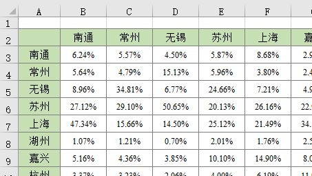
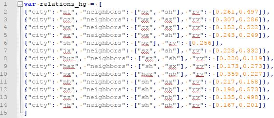
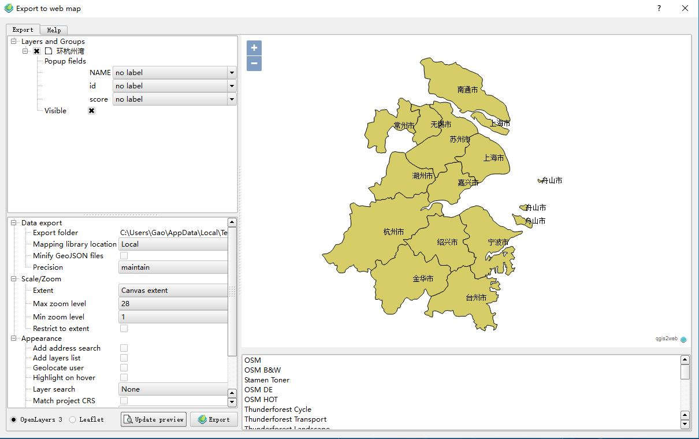
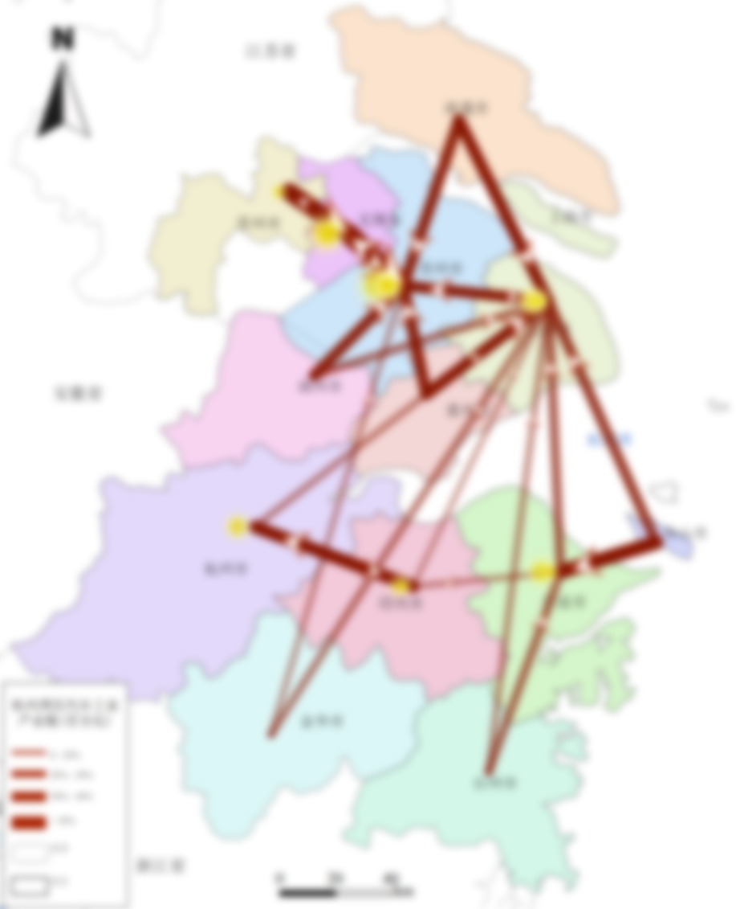
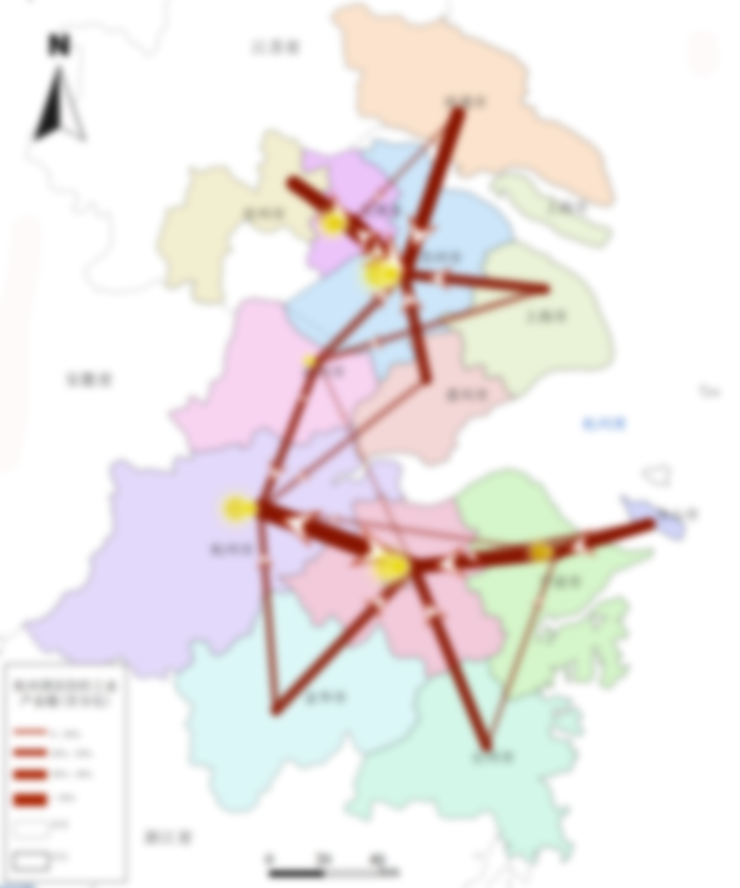

基于OpenLayers的WebGIS实例：添加标记要素
WebGIS case based on OpenLayers: add markers for features
先放效果图（地图可浏览）
杭州湾区产业链
有个作图需求，环杭州湾区城市间的产业链空间投影数据，用表格和数据反映城市间的联系，但是感觉不直观，想要将这种城市间的产业关联表现在地图上，提供的城市间产业关联的数据（数值已做处理）如图1。

这是需求，接下来开始思考如何将该数据以地图的形式呈现出来。作为一名资深GISer，首先想到的是利用ArcGIS作图，但是本次作图是要表现要素（城市）间的关联性，如果在每个要素上添加一个饼状图，表现不直观而且没有方向感，如果手工划线勾箭头，或许可以实现，但不是本人的风格。
因此只能选择放弃ArcGIS，转而想到了OpenLayers——为WebGIS开发提供的JavaScript类库包，最好的开源地图引擎，用于实现标准格式发布的地图数据访问。OpenLayers灵活的地图表现形式，使我决定采用开发一个简单的WebGIS地图的方式来解决这个问题。
关于OpenLayers类库的介绍，本文不做具体说明，请查阅官方文档，我只负责丢链接——OpenLayers官方文档。
思路
有了作图工具，然后思考作图总体思路，也就是要做出什么效果的图。设想如下：对于每个中心城市，选择一到两个关联度大的指向城市，用线条和箭头的方式表达城市间的相关性，线条粗细和颜色深浅代表关联度的大小（关联度大，线段粗，颜色深，颜色的作用是有层次感，便于识别），线段中间（或一侧）的箭头是流向方向，用黄色阴影表示流向的目的地，流入的越多，阴影部分越大。
总体设计有了，撸起袖子开始干!
下面介绍具体的实现方法。
数据准备及处理
本次任务需要准备的数据包括：
- 原始城市产业关联数据，格式为Excel；
- 地图底图，包括中国省级行政区划、地市级行政区划等矢量要素、河流水网（可选）等数据（可在本站博客中国国家基础地理信息系统（GIS）数据下载数据集）。
对于原始城市产业关联数据，可编码为JSON数据格式，方便后期数据读取和使用，格式示例如图2，其中，城市用首字母简单代替，“city”是中心城市，“neighbors”代表指向城市，“rv”表示关联度。

由于任务需求简单，本次作图不采用在线地图发布服务，使用QGIS工具（create web map插件）将ShapeFile矢量地图转换为可支持OpenLayers离线加载的GeoJSON数据格式。利用QGIS的该插件，可以直接将矢量地图发布为WebGIS，如图3，方便后续处理。

WebGIS编程开发
文档组织结构如图4所示。data存储数据等，images存储开发过程所需的图片素材，layers、resources和styles存放基于OpenLayers的WebGIS地图基本要素。

网页开发的基础就不多介绍了，想要做WebGIS，一定要有网页开发的基础，HTML、JavaScript、css等语言要熟悉。
现在已经有了基本的地图底图，要把表示城市关联的线段和箭头添加上去，首先要加载城市关联度json数据，然后根据城市关系构建线段图层要素，再根据线段及方向添加箭头，下面是实现代码。
// 加载关联度数据varrelations = eval('relations_fz');// 创建OL要素集varflightsSource =newol.source.Vector({wrapX:false,loader:function() {for(vari = 0; i < relations.length; i++) {// 获取城市和指向城市varcity = relations[i].city;varneighbors = relations[i].neighbors;varfrom = city_coords[city];// 在两个地点之间创建弧线要素for(varj = 0; j < neighbors.length; j++) {varto = city_coords[neighbors[j]]vararcGenerator =newarc.GreatCircle({x: from[0], y: from[1]},{x: to[0], y: to[1]});vararcLine = arcGenerator.Arc(10, {offset: 10});if(arcLine.geometries.length === 1) {varline =newol.geom.LineString(arcLine.geometries[0].coords);line.transform(ol.proj.get('EPSG:4326'), ol.proj.get('EPSG:3857'));varfeature =newol.Feature({geometry: line});vardx = to[0] - from[0];vardy = to[1] - from[1];// 在线段的3/4处添加箭头，计算箭头的角度varmx = from[0] + (to[0] - from[0]) / 4. * 3.;varmy = from[1] + (to[1] - from[1]) / 4. * 3.;varrotation = Math.atan2(dy, dx);// arrowspoint =newol.geom.Point(to);point.transform(ol.proj.get('EPSG:4326'), ol.proj.get('EPSG:3857'));arrow_point =newol.geom.Point([mx, my]);arrow_point.transform(ol.proj.get('EPSG:4326'), ol.proj.get('EPSG:3857'));vararrow_feature =newol.Feature({geometry: arrow_point});varpoint_feature =newol.Feature({geometry: point});// 设置显示格式，根据输入数据动态调整线条粗细、透明度和箭头大小等style_l =newol.style.Style({stroke:newol.style.Stroke({color:'rgba(135, 20, 0, '+ relations[i].rv[j] * 3 +')',width: relations[i].rv[j] * 80})})style_p =newol.style.Style({image:newol.style.Icon({src:'./images/point.png',anchor: [1, 0.5],rotateWithView:true,scale: relations[i].rv[j] * 0.75})})style_ap =newol.style.Style({image:newol.style.Icon({src:'./images/arrow.png',anchor: [0.5, 0.5],rotateWithView:true,rotation: -rotation,scale: relations[i].rv[j] * 0.3})})// 添加至OL要素集feature.setStyle(style_l);point_feature.setStyle(style_p);arrow_feature.setStyle(style_ap);flightsSource.addFeature(point_feature);flightsSource.addFeature(arrow_feature);flightsSource.addFeature(feature);}}}//map.on('postcompose', animateFlights);}});// 添加至地图varflightsLayer =newol.layer.Vector({source: flightsSource,});map.addLayer(flightsLayer);
然后设置地图要素的Style，以城市样式为例。
varstyleCache_={}varstyle_province =function(feature, resolution){varvalue =""varstyle = [newol.style.Style({stroke:newol.style.Stroke({color:'#555', lineDash: [1,2,3,4,5,6], lineCap:'square', lineJoin:'bevel', width: 1.5}),})];if(""!==null) {varlabelText = String("");}else{varlabelText =""}varkey = value +"_"+ labelTextif(!styleCache_[key]){vartext =newol.style.Text({font:'10px \'None\', sans-serif',text: labelText,textBaseline:"center",textAlign:"left",offsetX: 5,offsetY: 3,fill:newol.style.Fill({color:'rgba(None, None, None, 255)'}),});styleCache_[key] =newol.style.Style({"text": text})}varallStyles = [styleCache_[key]];allStyles.push.apply(allStyles, style);returnallStyles;};
至此，WebGIS地图制作完成，可以交差了，本次任务结束。
附2张示例图（保密起见，图像做了模糊处理）。


Fighting, GISer!
最新博文